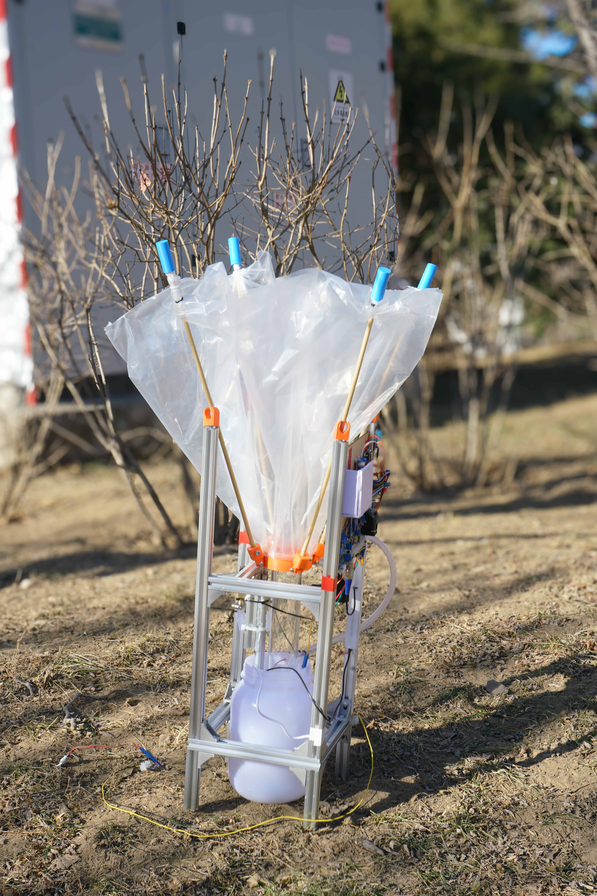
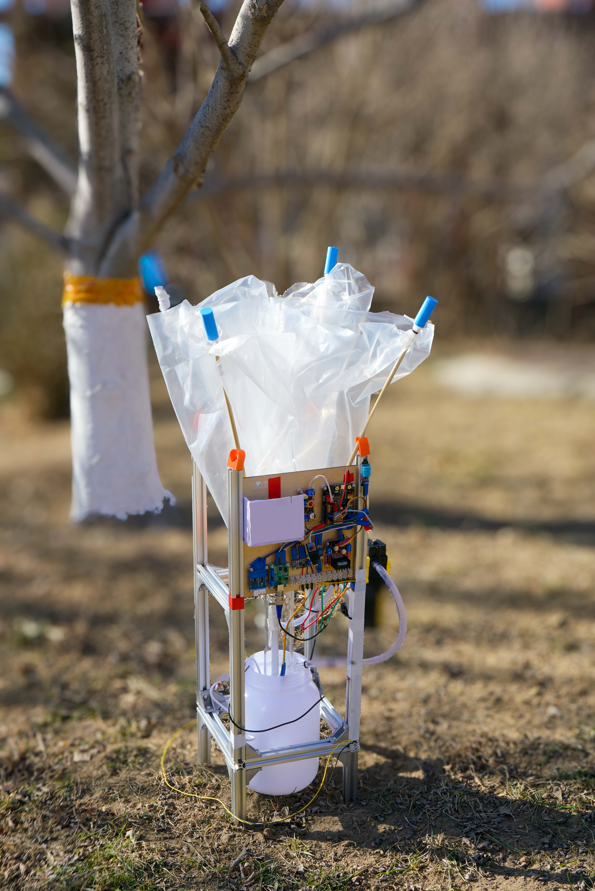
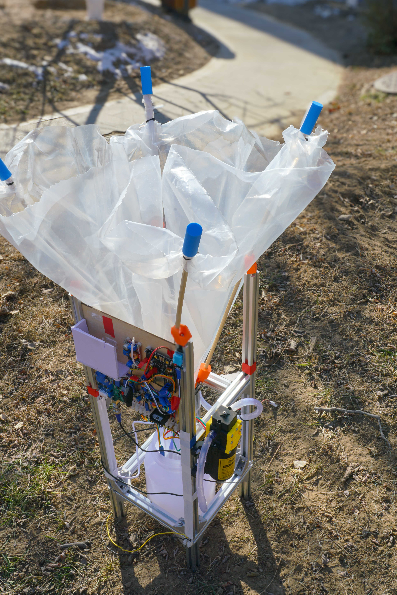
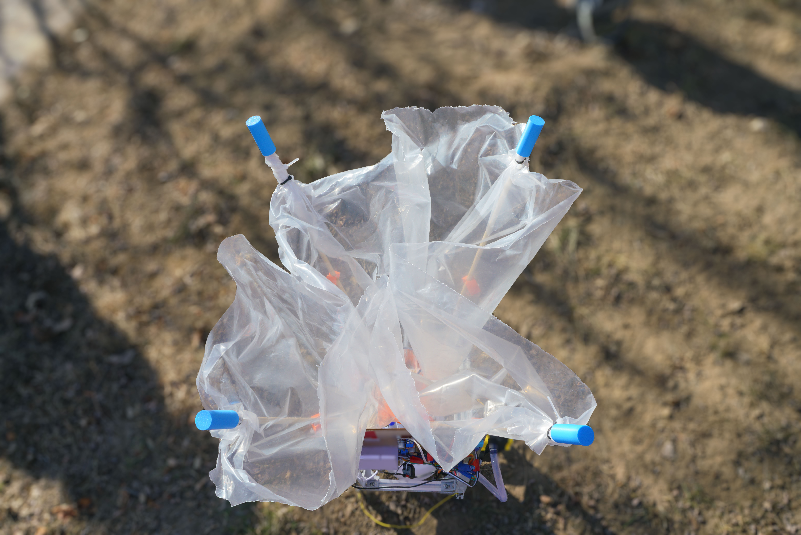
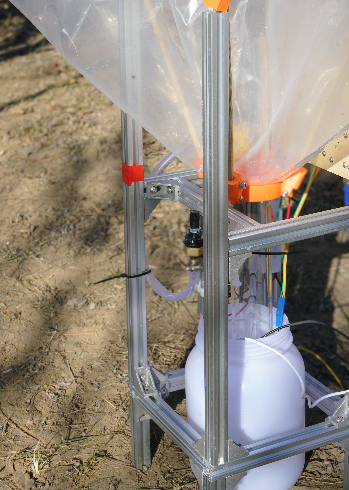
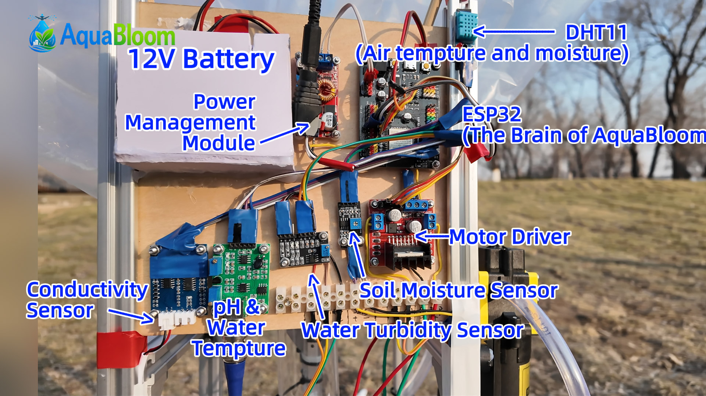
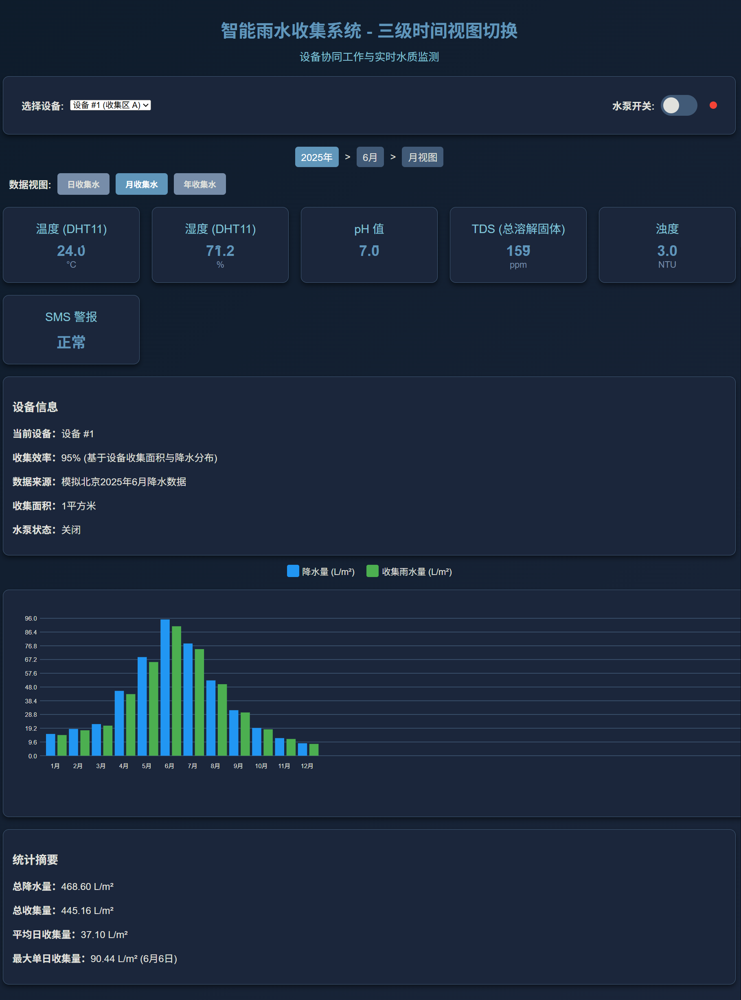

Introduction
简介
AquaBloom is an integrated rainwater harvesting and intelligent irrigation system designed for dense urban environments. It combines rain collection, filtration, storage, and on-demand reuse into a compact unit suitable for narrow green strips, roadside gaps, and other space-limited locations. The system features a retractable rain-collecting structure that deploys during rainfall for efficient water capture and automatically folds away in dry conditions, minimizing impact on pedestrian movement and the urban landscape. Collected rainwater is pre-filtered and stored in an underground module for later use. Powered by low-energy smart control, AquaBloom uses environmental and soil conditions to autonomously manage rain collection and irrigation, delivering water evenly to improve efficiency and enhance the local microclimate. Through distributed deployment, AquaBloom transforms rainwater that would otherwise be lost into a sustainable urban water resource, reducing reliance on potable water and easing pressure on drainage systems.
AquaBloom 是一套面向城市密集空间的雨水收集与智能灌溉一体化装置，将集雨、过滤、储存和按需利用整合为一个紧凑系统，适用于道路缝隙、狭窄绿化带等受限场景。装置采用可展开并可收合的集雨结构，在降雨时高效汇水，在晴天自动收拢，不影响通行与城市景观；雨水经基础过滤后储存在地下模块中，用于后续利用。系统以低功耗智能控制为核心，结合环境与土壤状态自动判断集雨与灌溉时机，通过均匀喷洒实现高效用水，同时改善局部微环境。通过分布式部署，AquaBloom 能将原本快速流失的雨水转化为可持续利用的城市水资源，减少对自来水的依赖并缓解排水系统压力。





How It Works
它是如何工作的
Our innovation is a compact rainwater reuse system designed for dense urban green spaces. The device operates through three adaptive modes that respond automatically to weather and environmental conditions. During rainfall, the umbrella-shaped collection structure deploys to capture rainwater efficiently, guiding it along the surface into the underground storage tank. Once rainfall ends, the collection surface retracts, ensuring that sunlight and airflow to the green belt are not obstructed and the urban landscape remains unobtrusive. On dry days, the system switches to irrigation mode, pumping stored rainwater to surface spray nozzles that evenly distribute water to the soil.
我们的创新产品是一套面向城市绿化场景的小型雨水再利用系统，其运行逻辑围绕环境变化自动切换为三种工作模式。当降雨发生时，装置展开伞状集水结构，将雨水高效汇集并沿伞面引导进入地下储水箱；降雨结束后，集水结构自动收回，避免遮挡绿化带的采光与通风，保持城市空间的整洁与开放。在无降雨的情况下，系统进入灌溉模式，利用储存的雨水通过喷头对土壤进行均匀浇灌。


The system is specifically scaled to fit within roadside green belts and other narrow urban spaces. Water is transferred through a simple, straight pipeline from storage to irrigation, minimizing transmission losses and improving overall efficiency. Through this straightforward yet responsive workflow, AquaBloom enables rainwater to be captured when available, stored discreetly, and reused precisely when needed, turning intermittent rainfall into a reliable resource for urban greenery.
整套设备的体量经过专门设计，可嵌入道路绿化带等狭窄空间中，不改变原有城市结构。雨水从储存到灌溉仅通过一条直线输水通道完成，结构简洁，有效降低输水过程中的损耗。通过这一清晰而高效的工作流程，系统实现了雨水的及时收集、隐蔽储存与按需利用，使原本短暂且易流失的降雨转化为稳定服务于城市绿化的水资源。

After the system starts, it enters an initialization stage where all sensors, as well as the pump and motor, are configured and prepared for operation. This ensures that both data acquisition and mechanical components are in a ready and stable state.
系统启动后首先进入初始化阶段，对传感器以及水泵和电机进行配置与准备，确保各硬件模块处于可正常工作的状态。
The system then periodically reads data from multiple sensors, including air temperature and humidity (DHT11), soil moisture (SMS), and several water quality parameters such as turbidity, pH, and electrical conductivity. These measurements are used to assess environmental conditions and determine whether the collected water is suitable for use.
随后系统以一定周期读取多种传感器数据，包括空气温湿度（DHT11）、土壤湿度（SMS），以及水体的浊度、pH 值和电导率，用于综合判断环境状态和水质情况。
Based on the sensed data, the control logic follows two main decision paths. The first checks whether it is raining; if rainfall is detected, the system opens the rainwater collector to capture and store rainwater. The second evaluates whether the surrounding environment is dry; when dry conditions are identified, the system activates the pump to perform irrigation as needed.
在获取传感器数据后，系统进入决策阶段，控制逻辑主要分为两条判断路径。一方面判断是否正在下雨，若检测到降雨，则打开雨水收集器以收集雨水。另一方面，系统判断周围环境是否处于干燥状态。当环境偏干燥时，系统会根据设定条件开启水泵进行灌溉；当不需要灌溉或收集雨水时，则关闭水泵并关闭收集器。
When neither rain collection nor irrigation is required, the system closes the collector and shuts down the pump. Through this closed-loop, condition-based control strategy, the system ensures that rainwater is collected when available, used only when necessary, and conserved when not needed, achieving efficient and water-saving operation.
整体流程体现了一种基于环境感知的闭环控制策略，实现了“该收的时候收、该用的时候用、不需要时关闭”的自动化雨水利用逻辑。

We also have a control webpage, which can serves as a unified interface for AquaBloom device management and data visualization. From the homepage, users can view their profile, multiple registered devices, and each device’s real-time status, then enter a dedicated control panel with a single tap. The device page displays live sensor readings including temperature, humidity, soil moisture, pH, TDS, and turbidity, while allowing intuitive control of pumps and collectors. A styled line chart below visualizes collected water data, with quick toggles between yearly summaries and daily trends within a selected month, offering both long-term insight and detailed monitoring at a glance.
我们还有一个操作网页，其为AquaBloom提供统一的设备管理与数据可视化入口。用户可在主页查看个人账户、名下多台设备及其实时运行状态，并快速进入单台设备的控制界面。在设备页中，系统实时展示温湿度、土壤含水量、pH、TDS 与浊度等传感器数据，同时支持对水泵与集水器的直观开关控制。页面下方以美观的折线图呈现集水数据，用户可在年度总览与月度每日视图之间自由切换，直观理解系统的长期表现与短期变化。
Specification
技术指标
| 工作模式数量 | 3 种（集雨 / 收拢 / 灌溉） |
| 供电方式 | 2 种（12V电池 / 12V直流电源并入电网） |
| 集水结构展开响应时间 | ≤ 5 min（降雨开始后） |
| 单次集雨量 | 20–35 L（模拟降雨测试） |
| 集水效率 | ≈ 92% |
| 雨水初级过滤后浊度 | ≤ 4.0 NTU |
| 水质改善倍率 | 约 5 倍（浊度下降） |
| 连续喷洒稳定运行时间 | ≥ 30 min（水泵全功率） |
| 水泵运行状态 | 无过热、无损坏 |
| 设备结构类型 | 可收合伞状集水结构 + 地下储水模块 |
| 输水通道数量 | 1 条直线管道 |
| 维护频率需求 | 低（连续运行测试中无需维护） |
（若产品技术指标变更，恕不另行通知）
| Number of Operating Modes | 3 modes (Rain Collection / Retraction / Irrigation) |
| Power supply mode | 2 types (12V battery / 12V DC power connected to the grid) |
| Rain Collection Deployment Response Time | ≤ 5 min (after rainfall begins) |
| Single-Test Rainwater Collection Volume | 20–35 L (simulated rainfall test) |
| Rainwater Collection Efficiency | ≈ 92% |
| Turbidity After Primary Filtration | ≤ 4.0 NTU |
| Continuous Spraying Stable Operation Time | ≥ 30 min (pump at full power) |
| Pump Operating Condition | No overheating, no damage |
| System Structural Configuration | Retractable umbrella-shaped collector + underground storage module |
| Number of Water Transfer Channels | 1 straight pipeline |
| Maintenance Requirement | Low (no maintenance required during continuous operation testing) |
（ Specification changed without notice.）